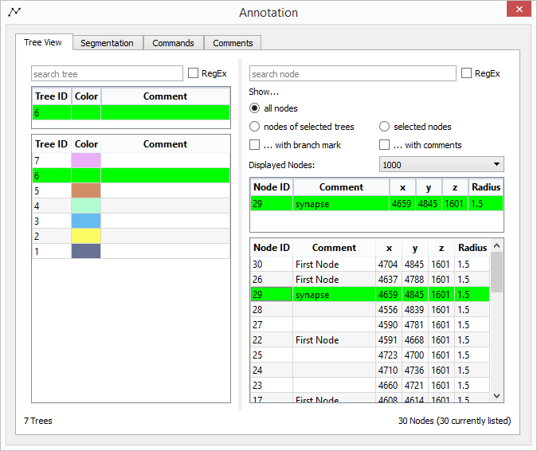

KNOSSOS Quickstart Guide¶
This tutorial should give a very rough introduction and overview about KNOSSOS 4.1.2 and its features.
KNOSSOS is a multi-platform scientific tool written in C++† to visualize large volume image data generated by Serial Blockface Scanning Electron Microscopy (SBFSEM). It provides the ability to overlay the image data with a user generated skeleton structure, representing the spatial structure and the connectivity of labeled neurons, and displays a three dimensional model of it.
Note
†KNOSSOS uses the following libraries: Qt 5, QuaZIP, PythonQt, OpenGL, Boost, glut, google-snappy, libCURL, openJPEG 2000.
Launching KNOSSOS¶
Execute KNOSSOS 4.1.2.
Open the Dataset Chooser Dialog at the top-left menu entry:
To load a dataset from your computer:
- Press ... and navigate to the
knossos.conffile of that dataset, - press on Add Dataset (the dataset appears in the list on the left side),
- select the dataset in the list and press on Use to load it.
- Press ... and navigate to the
The Data cache cube edge length option sets the Supercube Edge, i.e. the number of cubes to be loaded per viewport. Higher numbers require more memory.
- A supercube edge size of
5is optimal for tracing (requires 250 MB RAM). Other sensible settings are7(requires 686 MB RAM) or3(54 MB RAM).
- A supercube edge size of
On exit, KNOSSOS remembers the last used dataset and automatically loads it on next start.
Basic interface¶
You can see four viewports which show the 3D image data:
XYplane of the stack (upper left, red border)XZplane of the stack (lower left, green border)YZplane of the stack (upper right, blue border)- 3D view of the annotation (lower right)
In the toolbar, you can enter or paste coordinates in the format x, y, z. The view will center on those coordinates automatically.
The most relevant KNOSSOS window is the *Annotation Window*:
This window displays your annotation progress. Select either Tree View or Segmentation to see your skeleton structure/segmentation.
Saving/Auto-saving/Loading¶
The annotation data will be saved automatically every five minutes if changes have been made.
To manually save your data, press Ctrl-S, or select .
Annotation files can be loaded into KNOSSOS by choosing . Alternatively, you can also choose between recently saved files by selecting .
Basic Viewport Handling¶
To move through the dataset, place the mouse cursor in one of the three slice plane viewports and
- press
f,dor use the arrow keys: Move one layer forward or backward, - press
fordin combination withShift: Jump ten layers forward or backward, - or move the mouse wheel up or down.
By pressing the left mouse button, you can
- pull the stack in the desired direction (if Navigation - Drag Dataset is enabled),
- or let KNOSSOS center on that point (if Navigation - Recenter on Click is enabled).
- To translate/rotate in the 3D viewport, press and hold the left/right mouse button inside the 3D viewport and drag.
- To zoom into the dataset or into the 3D viewport, place the mouse cursor in one of the four viewports and press
ioroto zoom in/out. - To resize the viewports, drag the corner buttons and to move them, use
Ctrl-Alt-left mouse drag. To restore the standard positions and sizes click the button Reset VP Positions in the tool bar.
Skeleton Tracing¶
Nodes are placed by a right click in one of the three slice plane viewports, and are automatically linked to the last node. To just “drop” nodes without linking, you have to change the work mode via Edit Skeleton and Work Mode in the menu bar.
- The currently active node can be recognized by its number which appears beside the point or via the Annotation window.
- You can activate a node by holding down
Shiftand left-clicking it or by selecting the node in the Tree View tab of the Annotation Window. - Press
x/Shift-Xin one of the viewports to activate the next/previous node. To change the active tree, presszorShift-Z. - To jump to the active node press
s. - You can delete the active node by pressing
Delon your keyboard. - If you want to reposition a node, simply click on the node with the middle mouse button and drag it to another position. The node does not have to be your active node.
You can add branch nodes by holding Ctrl while pressing the right mouse button.
To transform a normal node to a branch node, press b or choose Push Branch Node in the Annotation window.
To jump to the last placed branch node, press j or use Pop & Jump in the Annotation Window. This transforms the branch node to a normal node.
Different node colors indicate different node types:
- Blue: Branch node
- Yellow: Commented node (will be blue, if it is also a branch node)
To link two non-connected nodes or to unlink two connected nodes, activate one of them, hold Alt and left-click the second node or hold Shift and click on the second node with the mouse wheel.
Alternatively, this can also be done in the Annotation Window.
Comments¶
You can add a comment on trees and nodes by using the lists in the Annotation Window.
If you use some comments regularly, you can enter them in the Comments tab of the Annotation Window, and add them to the active node by pressing F1-F10.
If you enable Use custom comment colors and Use custom comment radius, you can also specify the highlighting color and radius for these nodes.
Shortcuts¶
Note
In this paragraph, LMB means “Left mouse button”, RMB means “Right mouse button”, and MMB means “Middle mouse button”.
Also keep in mind that on OS X, Ctrl is the Cmd key, and shortcuts that use a single letter key (e.g. C) will need to be prefixed with Fn.
Application Shortcuts¶
| Shortcut | Action |
|---|---|
Ctrl-O |
Load annotation from file |
Ctrl-S |
Save annotation |
Ctrl-C |
Copy current coordinates |
Ctrl-V |
Paste coordinates |
Ctrl-H |
Open this documentation |
Ctrl-Q (equal to Alt+F4) |
Close KNOSSOS |
Tree Shortcuts¶
| Shortcut | Action | |
|---|---|---|
C |
Create a new tree | |
Z/Shift+Z |
Move to next/previous tree (by tree ID) | |
X/Shift+X |
Move to next/previous node (by node ID) | |
Node Shortcuts¶
| Shortcut | Action |
|---|---|
S |
Jump to active node |
Del |
Delete active node |
B |
Mark active node as branch node |
J |
Jump to last branch node |
Shift+left click on node |
Reduce selection to clicked node |
Ctrl+left click on node |
Add/Remove node from selection |
Ctrl+left mouse drag |
Pull selection square to select multiple nodes |
Alt+left click on node |
Add/delete segment between clicked node and active node (equal to |
| Mouse wheel hold and drag on node | Move node to new position |
A |
Change to work mode “Add node” |
W |
Change to work mode “Link node” |
N/P |
Jump to next/previous comment node |
F1-F10 |
Custom comment shortcuts |
Viewport Shortcut¶
| Shortcut | Action |
|---|---|
←/→ |
Jump Jump Frames steps left/right in active viewport
(Jump Frames can be defined at
) |
Shift-←/→ |
Jump 10 steps left/right in active viewport |
↑/↓ |
Jump Jump Frames steps up/down in active viewport |
Shift-↑/↓ |
Jump 10 steps up/down in active viewport |
F/D |
Jump [Jump Frames] steps forward/backward in active viewport (Jump Frames can be defined at “Preferences” – “Dataset Navigation”) (equal to mouse wheel forward/backward) |
Shift-F/D |
Jump 10 steps forward/backward in active viewport |
I/O in orthogonal viewports |
Zoom in and out of orthogonal viewports (equal to Ctrl + mouse scroll) |
Ctrl-Alt+left mouse drag |
drag viewport (restore original position by clicking on “reset viewports” in the tool bar) |
3 |
Toggle viewport crosshairs |